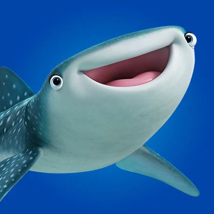

Немо
Немо — необычайно любопытная и общительная рыбка-клоун. После нескольких лет, проведённых под опекой чересчур осторожного отца Марлина, Немо наконец-то идёт в школу. Предвкушая первую встречу с одноклассниками и знакомство с Большим барьерным рифом, Немо оказывается участником невероятного для маленькой рыбки приключения, во время которого он понимает, что способен на очень отважные поступки... как, впрочем, и его отец.
В необъятных океанских глубинах не найти рыбки более дружелюбной и общительной, чем Дори. Она с огромной радостью проговорила бы с вами весь день, рассказывая историю своей жизни... Но это не так-то просто, ведь Дори страдает потерей долговременной памяти. Тем не менее, она с радостью предлагает отчаявшемуся Марлину помощь в поисках его сына. Дори, конечно, весьма странный попутчик в нелёгком путешествии, но её оптимизм помогает Марлину преодолеть все препятствия и совершить невозможное.
Потеряв в глубинах океана любимую жену, рыбка-клоун по имени Марлин в одиночку воспитывает своего сына Немо. Со стороны даже кажется, что он слишком уж сильно его опекает. Когда Немо неожиданно попадается в сети охотников за редкими рыбками, Марлин собирает все своё мужество в плавник и бросается на поиски единственного сына.
Хэнк — осьминог, точнее, «семиног». Он где-то потерял одно из щупалец, а вместе с ним — и чувство юмора. Впрочем, даже без одной конечности Хэнк может дать фору своим восьминогим собратьям. Он — настоящий спец по побегам, поскольку способен замаскироваться практически на любой местности. Хэнк первым приветствует Дори в стенах Института Морской жизни. Однако не стоит заблуждаться на его счет — Хэнк не ищет друзей. У него на уме только одно — получить счастливый билетик на грузовик, который доставит его в уютный аквариум в Кливленде, где он сможет, наконец, насладиться долгожданным уединением.
Краш, 150-летняя морская черепаха, просто обожает путешествия на дальние расстояния. Молодой душой, он с непринуждённостью профессионального сёрфингиста плавает по океанским течениям вместе со своим сыном Прыском. Когда Краш сталкивается с Марлином и Дори, он с большим энтузиазмом соглашается помочь им, но предупреждает, что это будет самая опасная и непредсказуемая поездка в их жизни.
Прыск — озорной и решительный морской черепашонок, который унаследовал от своего отца Краша бесстрашие и лёгкое отношение к жизни. Пылкий и экспрессивный, Прыск с удовольствием дурачится, обожает резвиться в океанских течениях и заниматься сёрфингом во время прибоя вместе с отцом. Прыск легко заводит друзей, а еще он способен превратить каждый день в увлекательное приключение.

Судьба довольно неуклюжа в воде, зато у нее большое, доброе сердце. Вообще, у нее все большое, ведь китовые акулы — самые крупные рыбы в мировом океане. Однажды в ее аквариум в Институте Морской жизни попадает на удивление знакомая синяя рыбка-хирург по имени Дори. И хотя Судьба отличается полным отсутствием грации (а зрелище это весьма плачевное), Дори считает, что Судьба — отличная пловчиха. Кроме того, Дори узнает, что ее новая знакомая также владеет языком китов.
Хотя учитель школы на рифе Мистер Скат и любит попеть во время своих уроков, он очень серьезно относится к образованию Немо и его подводных приятелей. Однако никто не любит уроки мистера Ската больше, чем Дори, которая с радостью выступает в роли помощника учителя (хотя Мистер Скат её об этом и не просит).
Дженни и Чарли готовы на все ради своей единственной дочурки Дори. День ее рождения стал для них настоящим праздником. Они защищали ее и учили всему, что может пригодиться в океане рыбке с нарушением памяти. Дженни кажется очень жизнерадостной и, возможно, немного пугливой. Но она — очень заботливая мать и умеет любую щекотливую ситуацию превратить в шутку. Чарли любит подурачиться, но для него нет ничего важнее обучения его дочери азам выживания в подводном мире.
Бэйли — дельфин-белуха, проживающий в Институте Морской жизни и искренне убежденный в том, что у него не работает часть мозга, отвечающая за эхолокацию. Счастье (или несчастье, в зависимости от того, кто говорит) в том, что доктора Института Морской жизни не нашли у Бэйли каких бы то ни было отклонений. Пессимизму белухи не в состоянии противостоять никто из соседей. Даже Судьба пыталась достучаться до Бэйли, но, сколько ни старалась, все без толку. Возможно, Бэйли послушает Дори, ведь у неё столько невероятных и даже сумасшедших идей.
Хлюп и Ластер — пара ленивых морских львов, прошедших реабилитацию в Институте морской жизни. Марлин и Немо нашли их наслаждающимися солнцем на излюбленном месте — самом завидном камне в округе, расположенном вблизи стен института. Эти два льва получают настоящее удовольствие от отдыха и предпочитают, чтобы их не беспокоили во время послеполуденного сна. Но даже если вы их случайно потревожите, знайте — они громко лают, но не кусают.
Найджел — самый обыкновенный пеликан. Все свободное время он проводит на пристани с такими же пеликанами, как и он сам. Но у Найджела есть тайная страсть, о которой никто не знает. Он может часами наблюдать за работой дантиста, чьи окна выходят на пристань, и обсуждать сложные стоматологические процедуры с его аквариумными рыбками.
Жабр — лидер разношёрстной банды тропических рыбок, обитающих в аквариуме дантиста. Это суровая и опытная рыба, у которой нет одного плавника, а тело украшают настоящие шрамы. В молодости Жабр был пойман аквалангистами, но в отличие от остальных обитателей аквариума дантиста, он прекрасно помнит вкус свободы. Частые и безрезультатные попытки сбежать из заключения сломили было его дух, но с появлением Немо он снова обретает силы для поиска обратной дороги домой… в океан.